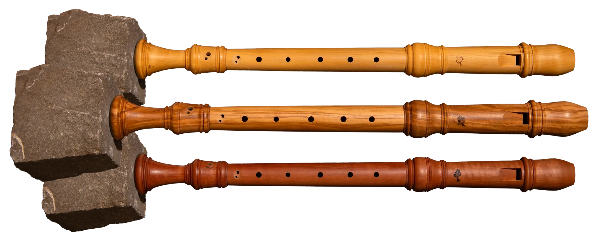
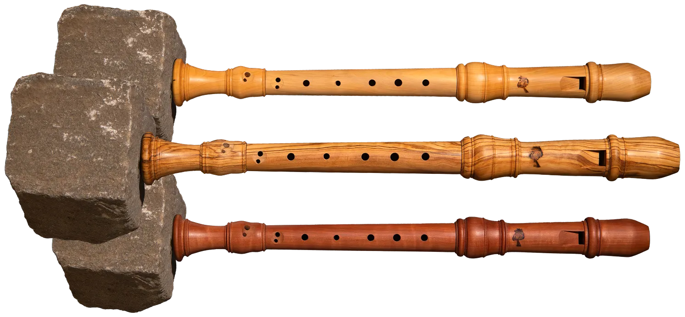

Menü
Zurück
Startseite
Werkstatt
Instrumente
Sopran 415 Hz
Alt 415 Hz
Oboe 415 Hz
Biografie
Kontakt
DE
EN
DE
FR
Die Instrumente — barocke Blockflöten und Oboen in 415 Hz
Oboe in C nach Jeremias Schlegel in 415 Hz
Aus Buchsbaum
Alt in F nach P.J. Bressan in 415 Hz
Aus Buchsbaum, Olive und Speierling

Sopran in C nach B. Reich in 415 Hz
Aus Buchsbaum, Olive und Speierling

Oboe in C nach Jeremias Schlegel in 415 Hz
Aus Buchsbaum
Entdecken
Alt in F nach P.J. Bressan in 415 Hz
Aus Buchsbaum, Olive und Speierling
Entdecken
Sopran in C nach B. Reich in 415 Hz
Aus Buchsbaum, Olive und Speierling
Entdecken